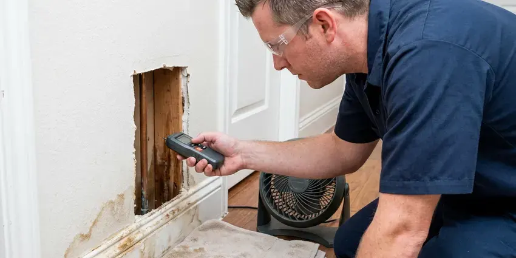

Commercial Plumbing in Wasilla, AK
For reliable commercial plumbing services in Wasilla, AK, CKN Plumbing is the name businesses trust. We keep your operations running without a hitch with minimal disruption.
- Rapid Emergency Business Response
- Local Alaska Experts
- Fast Commercial Service
- Honest Pricing

Keep Your Business Open and Flowing in Wasilla, AK.
Don't let plumbing issues disrupt your operations. Get in touch with us for a swift resolution.
Dependable Commercial Plumbing for Businesses in Wasilla, AK
At CKN Plumbing, we provide heavy-duty commercial plumbing solutions designed to meet the rigorous demands of Alaska businesses in Wasilla. From high-capacity water heaters to industrial-grade drain systems, our team ensures your commercial infrastructure works the way it should.
Our expertise includes:
- Commercial drain cleaning and hydro-jetting
- Backflow prevention device testing and repair
- Backflow prevention device installation and testing

Additional Plumbing Maintenance Services in Wasilla, AK
Our maintenance and specialty plumbing services in Wasilla, AK protect your home year-round and extend the life of every system.


Customers
Why Choose CKN Plumbing for Commercial Plumbing in Wasilla, AK?
We focus on minimizing downtime for your business, recognizing that every hour counts. Our experienced technicians deliver swift, effective solutions to get your commercial plumbing back in optimal condition quickly.
- Advanced Equipment, We use commercial-grade tools like hydro-jetters and video inspection cameras to provide accurate and lasting repairs for your plumbing systems.
- Code Compliance, All our commercial plumbing work closely follows local Wasilla codes and Alaska regulations, ensuring safety and legality for your business.
- Minimal Downtime, We schedule disruptive work before opening, after closing or on weekends.
Citywide Coverage
Our deep roots in Wasilla mean we have a thorough understanding of the local commercial infrastructure and common plumbing challenges. We offer fast, reliable service across all of Wasilla to keep your business operations smooth.
Experienced Team
Our commercial plumbing team at CKN Plumbing consists of well-trained and certified professionals with extensive experience in industrial and commercial systems. They undergo continuous training on the latest technologies and code updates to better serve your business.
Safety-First Approach
Our work is permitted when needed and documented for inspectors and insurers. We carry the liability coverage commercial clients and property managers count on.
Trusted Certified Wasilla Plumbing Services Professionals
At CKN Plumbing, we take pride in providing certified plumbing services throughout Wasilla, AK. Backed by recognized industry credentials, our experienced plumbers combine technical skill with genuine customer care. Whether it is repair, installation, or maintenance, we follow strict safety and quality standards to deliver lasting results you can trust.
Call Us Now PHCC Plumbing Contractor Recognition
PHCC Plumbing Contractor Recognition Better Business Bureau (BBB) Accreditation
Better Business Bureau (BBB) Accreditation Angi Certified Pro
Angi Certified Pro ISO 9001 Quality Management Certification
ISO 9001 Quality Management CertificationReliable Commercial Plumbing Services in Wasilla, AK
Multi-Family and Property Management Plumbing in Wasilla
Apartment complexes and HOAs need a plumber who can handle many units and quick turns. We repair leaks, replace water heaters, clear stacks and repipe buildings while keeping residents informed. Property managers get consistent pricing and detailed invoices for every unit. We also help plan capital projects like building-wide repipes.

Grease Trap Installation & Cleaning in Wasilla
Restaurants and food service establishments in Wasilla rely on working grease traps to prevent fats, oils, and grease (FOG) from entering the sewer system. CKN Plumbing offers professional grease trap installation, repair, and regular cleaning services. We ensure your grease trap is correctly sized for your business's needs and maintained to comply with local FOG regulations, preventing costly blockages and potential fines from the city.
Backflow Prevention Device Services in Wasilla
Backflow prevention devices are essential for protecting the public water supply from contamination, a significant concern for commercial properties in Wasilla. Most water providers require annual testing and certification of these devices. Our certified plumbers provide complete testing, repair, and installation of backflow preventers, helping your business remains compliant and safe. We handle all types, including reduced pressure zone (RPZ) assemblies and double check valve assemblies, which are common in commercial and industrial applications. Keeping these devices in good working order is a basic safety measure.
Slab Leak Detection & Repair for Businesses in Wasilla
Slab leaks can be especially damaging for commercial buildings, especially those built on concrete slab foundations. Glacial silt, gravel, and rock are common here, so excavating for sewer or water line repairs can take more planning than in milder places. These leaks, often caused by shifting soil or corrosive water, can undermine foundations, lead to mold growth, and cause serious water waste. Our technicians use advanced acoustic and thermal imaging equipment to pinpoint slab leaks without invasive demolition. Once located, we provide practical repair solutions, often involving re-routing or pipe repair, to protect your commercial property and prevent costly structural damage in Wasilla.
Commercial Plumbing Costs and Maintenance Plans in Wasilla, AK
Backflow tests usually cost $75 to $175 per assembly, while grease line jetting often runs $350 to $900 depending on length and buildup. Emergency after-hours service carries a higher rate. Preventive maintenance plans spread costs evenly and reduce surprise repairs. We give you written proposals so you can budget with certainty.
Commercial Drain Cleaning in Wasilla
CKN Plumbing offers specialized commercial drain cleaning services to keep your business's plumbing flowing freely. We use industrial-grade equipment like hydro-jetting machines, which use high-pressure water to scour the inside of pipes, thoroughly removing grease, food waste, and other common commercial blockages. This method is far more effective than traditional snaking for large-diameter commercial lines and ensures a thorough clean, preventing recurring clogs that can disrupt your operations in Wasilla.
Commercial Water Heaters and Boilers in Wasilla, AK
Commercial kitchens, gyms and multi-family buildings need large amounts of hot water. We service and install high-input tank water heaters, tankless racks and boiler-fed systems with storage tanks. Some rural households in Alaska use hauled water and storage tanks, which brings its own pump and freeze protection needs. Mineral scale can build up in these systems fast, so we offer descaling and flushing on a schedule. We also install mixing valves to deliver safe temperatures at hand-washing sinks.

Commercial Restroom Fixture Service in Wasilla, AK
Maintaining functional and hygienic restrooms is essential for any commercial establishment in Wasilla, AK. CKN Plumbing provides complete services for commercial restroom fixtures, including repair and replacement of toilets, urinals, sinks, and automatic faucets. We address common issues like persistent leaks, clogs, and low water pressure, ensuring your commercial restrooms are always in excellent working order for your patrons and employees.
Commercial Plumbing Near Me in Wasilla, AK
We know the water providers, inspectors and code requirements that apply to Wasilla businesses. That familiarity helps us keep your property compliant. Your operations stay on schedule.
Business owners searching for commercial plumbing near me can count on CKN Plumbing for fast response in Wasilla. Our trucks carry commercial parts and backflow test kits. Most service calls are handled in a single visit.
CKN Plumbing at a Glance
- Licensed and insured plumbers serving Wasilla, AK
- 24/7 emergency service with same-day scheduling
- Upfront, flat-rate pricing before work begins
- 4.9-star rated by 309+ Alaska customers
Wasilla Map
Wasilla Information
- Population
- 9,945
- Area codes
- Local
- Service area
- Wasilla and communities within 40 miles
- Nearby
- South Lakes, Tanaina, North Lakes, Meadow Lakes
For businesses in Wasilla, AK, dependable commercial plumbing is essential to withstand heavy usage, and our services are designed to address local water conditions and the operational needs of your business.
Expert Services
Trust our professionals for reliable CKN Plumbing solutions in Wasilla, AK.
Our Specialized Plumbing Services in Wasilla, AK
At CKN Plumbing, we provide a complete range of plumbing services across Wasilla, AK. From leak detection to full system installations, our team ensures fast, precise, and affordable service for both residential and commercial properties. Explore our core services below:


Here Is How Our Commercial Plumbing Process Works in Wasilla, AK
We follow a clear, organized approach to ensure every commercial plumbing job is handled with professionalism and precision.
Request a Quote
Contact CKN Plumbing at (928) 470-9007 to schedule a commercial plumbing service or request an emergency response. We'll gather details about your issue and dispatch a qualified technician to your Wasilla business.
On-Site Assessment
Our commercial plumber arrives promptly to your business in Wasilla, conducting a thorough diagnosis of the plumbing problem using specialized tools. We will clearly explain the issue and propose the most effective solution.
Expert Service
With your approval, our technician will perform the necessary commercial plumbing repairs, installations, or maintenance. We use high-quality parts and follow industry best practices, ensuring lasting results for your Wasilla business.
Frequently Asked Questions About Commercial Plumbing in Wasilla
Commercial plumbing costs in Wasilla vary widely depending on the type and complexity of the service. A minor drain clog might range from $150 to $400, while a commercial water heater installation could be $2,000 to $10,000 or more. Repiping an entire commercial building can run into tens of thousands. We provide clear, upfront estimates after a thorough assessment.
Regular maintenance is key to preventing commercial plumbing problems. This includes scheduled drain cleanings, annual backflow testing, routine inspections of water heaters and fixtures, and educating employees on proper waste disposal. Preventive care helps avoid costly emergency repairs and extends the life of your plumbing system in Wasilla.
Slow floor drains, gurgling toilets, sewer odors and repeated backups point to buildup or line damage. A camera inspection shows exactly what is wrong.
CKN Plumbing services and installs all major brands of commercial water heaters, including A.O. Smith, Rheem, Bradford White, Ruud, and State. Our technicians are trained to work on many types, such as gas, electric, and tankless commercial units, making sure your business has reliable hot water.
For most businesses in Wasilla, we recommend a comprehensive commercial plumbing inspection at least once a year. High-traffic establishments like restaurants or manufacturing plants might benefit from quarterly inspections to prevent major issues and ensure compliance with health and safety regulations.
Look for signs like persistently slow drains, foul odors coming from drains or grease traps, reduced water pressure, discolored water, unexplained increases in water bills, or damp spots on walls or floors. Any of these can indicate a developing plumbing problem that needs professional attention before it gets worse.
Yes, our commercial repairs and installations include written warranties on parts and labor. Manufacturer warranties apply to new equipment too.
CKN Plumbing stands behind the quality of our commercial plumbing work. We offer a solid warranty on all repairs and new installations, typically covering parts and labor for a specific period. Our technician will provide detailed warranty information for your specific service in Wasilla.
What People Are Saying About Our Plumbing Experts?

Emily R.
I called CKN Plumbing for plumbing repair, and the technician was fast, polite, and thorough. They explained the problem clearly and fixed it the same day. I will definitely hire them again. Highly recommended!
Plumbing Repair · Gateway, AK
Laura S.
I scheduled a water heater replacement, and the team made the process smooth and affordable. The new unit works perfectly, and they cleaned up after completing the job.
Water Heater Replacement · North Lakes, AK
Daniel K.
A pipe burst at 11 pm and they actually answered. The plumber showed up within the hour, shut everything down, and had us back to normal the next morning. Could not ask for more.
Emergency Plumbing · South Lakes, AK
James P.
Our commercial plumbing system had a leak under the sink, and CKN Plumbing handled it professionally. The plumbers arrived quickly and restored everything without disruption to our customers.
Commercial Plumbing · North Lakes, AK
Mark T.
When our office needed drain cleaning, CKN Plumbing provided quick, reliable service. The plumber arrived on time and made sure every drain flowed perfectly before leaving. Very satisfied.
Drain Cleaning · Wasilla, AK
Patricia H.
We had a slab leak that two other companies could not find. CKN Plumbing located it in under an hour, explained our options, and the price matched the quote to the dollar.
Slab Leak Repair · Knik-Fairview, AK